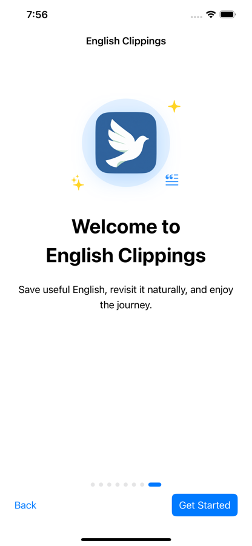
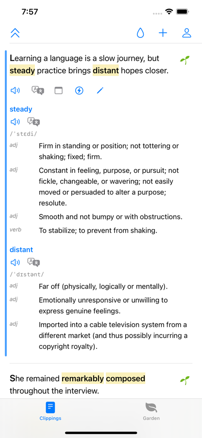
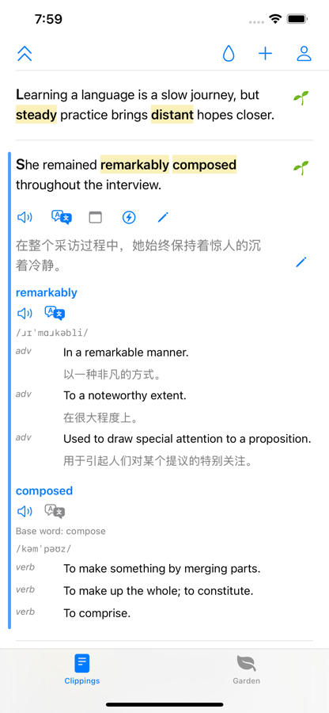
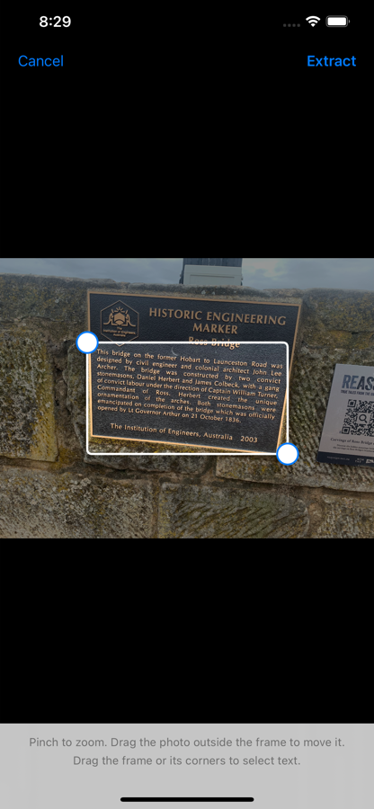
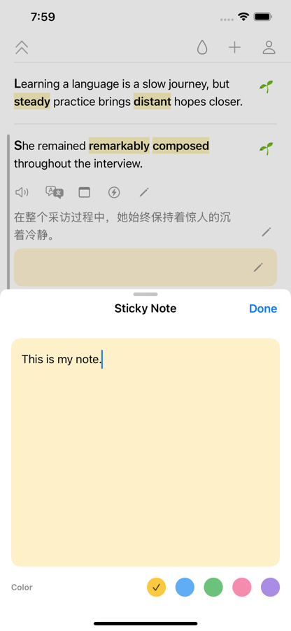
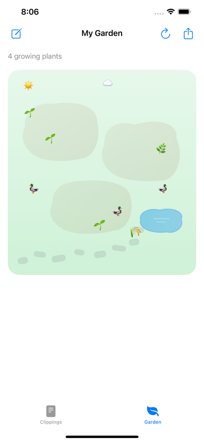

Support
Help with English Clippings
If something is not working as expected, send us a message. We will help you get back to saving, understanding, and practising useful English.
See English Clippings in action






We normally respond by email.
Frequently asked questions
Why is translation unavailable?
If you use Apple Translation, open Apple's Translate app and download both the English and target-language packages. Return to English Clippings and check again. Your clipping remains saved while translation is unavailable.
How do I import text from another app?
Select the text, open the Share menu, and choose English Clippings. You can also use the Save to English Clippings action or configure the optional Shortcut shown during onboarding.
How do I capture text from a photo?
Tap the add button and choose the camera option. Take a photo or select one from your library, adjust the frame around the text you want, and tap Extract.
Are Sign in with Apple and iCloud required?
No. You can use English Clippings without signing in. Sign in and iCloud synchronization are optional features for identity and syncing between your devices.
How do I remove my data?
You can delete individual clippings in the app. To return the app to its initial state, use Reset in Settings; removing the app also removes local app data.
What to include
To help us understand the problem, include:
- Your iPhone model and iOS version
- The English Clippings app version
- What you expected to happen
- What happened instead
- A screenshot, if it does not contain private information
Translation troubleshooting
If Apple Translation is selected and a language is unavailable, open the Translate app and download both the English and target-language packages. Then return to English Clippings and check again.
Translation availability depends on Apple Translation and the required language packages. Your saved clipping remains available even when translation is temporarily unavailable.
Before sending a report
Try closing and reopening English Clippings. If the issue continues, restart your iPhone and check that you are using the latest available version of the app.
For information about data handling, read the Privacy Policy.